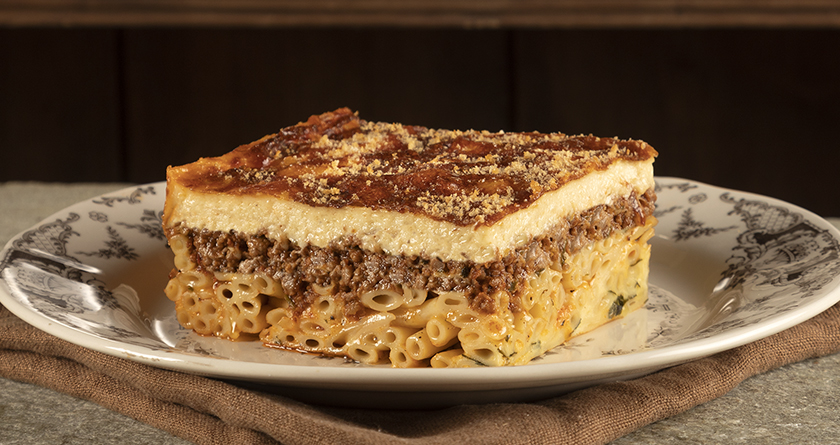

Pastitsio Recipe!
Home

Description
Pastitsio is the ultimate Greek baked pasta dish, often called the "Greek lasagna." It features layers of thick, tube-shaped pasta, a rich and aromatic minced meat sauce cooked with tomatoes and spices, and a thick, creamy, buttery béchamel sauce on top. Baked until golden and bubbling, it is a comforting and hearty dish that brings the family together at the dinner table.
Ingredients
Pasta & Meat
- Pasta: 500g tube pasta (No. 2)
- Meat: 500g ground beef
- Sauce: 400g crushed tomatoes, 1 tbsp tomato paste
- Aromatics: 1 onion, 2 cloves garlic, cinnamon stick
Bechamel
- Butter: 100g butter
- Flour: 100g all-purpose flour
- Milk: 1 liter warm milk
- Eggs: 2 egg yolks, 100g grated cheese
Steps
- Cook pasta: Boil the pasta in salted water until al dente, drain, and mix with a little butter or egg white.
- Make meat sauce: Sauté onions and garlic, add the ground beef until browned, then add tomatoes, spices, and simmer until liquid is reduced.
- Make bechamel: Melt butter, whisk in flour, add milk gradually, and cook until thick. Remove from heat and mix in yolks and cheese.
- Layer: In a greased pan, add pasta, top with meat sauce, then pour the béchamel over the top.
- Bake: Bake at 180°C for 45 minutes until the top is golden brown.